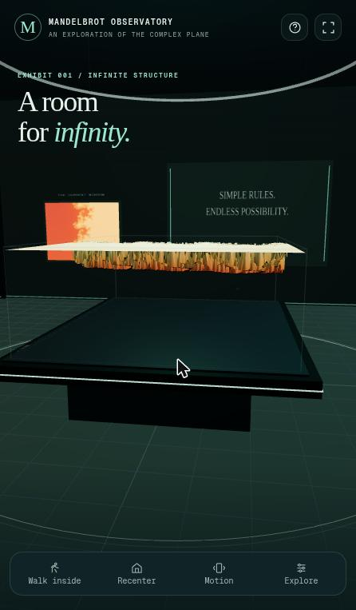
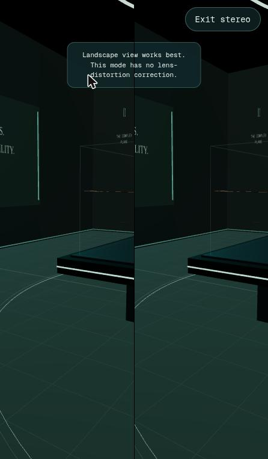
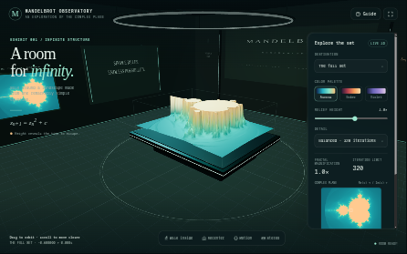
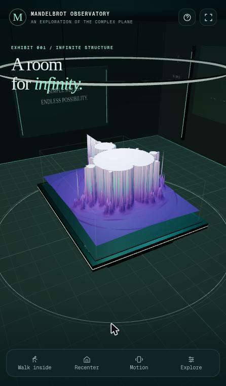

Phase 1 · Browser review
Browser Review — candidate-06 is GPT6 Pro · v0
- Blind id
candidate-06(what the reviewer was told)- Candidate
- hidden in blind viewGPT6 Pro · v0 ·
OpenAI-Web-GPT6-Pro-v0 - Prompt
- v0
- Review type
- Browser (Review/Browser-Review/ GitHub)
Revealed mapping: candidate-06 = GPT6 Pro · v0 (OpenAI-Web-GPT6-Pro-v0), from
ReviewOrchestrator/blind-mapping.json GitHub.
Overall score
8/ 10 overall score
Parsed as the first number of this line, verbatim:
**Overall score: 8 / 10**
Review, verbatim
The reviewer's REVIEW.md as written (its heading is shown above). REVIEW.md GitHub
| Criterion | Score | One-line reason |
|---|---|---|
| 1. Loads & renders | 9 | Load event at ~136 ms, 3D room and relief visible at first screenshot; zero console messages across every session. |
| 2. Done-when (desktop-checkable) | 8 | A real gallery room around a 3D Mandelbrot relief on a plinth; the XR path is present but correctly disabled here. It deliberately does not use three.xr.js, and says why. |
| 3. Visual wow | 8 | Polished "observatory" look: plinth, glass case, wall plaques, halo ring, three palettes. Zoomed presets look weaker (thin floating slab). |
| 4. Usability & controls | 8 | Orbit, scroll, walk mode with WASD and an on-screen pad, minimap click-to-center, presets, palettes, detail and relief controls, plus a thorough guide. On narrow screens the Explore panel hides the view, and the header icons are 34 px. |
| 5. Robustness | 8 | No errors. Unavailable fullscreen and motion sensors are handled with clear toasts, and stereo exits cleanly. Frame rate could not be measured in this environment (see notes). |
| 6. XR readiness & messaging | 8 | isSessionSupported gating; "VR unavailable here" is a disabled button with a plain explanation. AR (room and tabletop) is hidden when unsupported. Split-screen stereo and a gyro fallback are offered. Untestable without a device. |
Overall score: 8 / 10
Environment notes
- The Chrome window is managed by a tiling WM.
resize_windowto 1280×800 and to 390×844 had no effect, and the viewport stayed 446×763 (already phone-like). I checked the wide desktop layout and an exact 390×844 layout by putting the same URL into a scaled iframe overlay. navigator.xrexists, butisSessionSupported('immersive-vr'|'immersive-ar')both returnfalse. No WebXR emulator is installed.requestAnimationFrameran at about 1.8 fps, with the canvas shown or hidden alike. The main thread was idle: 498setTimeout(0)ticks in 2 s and no long tasks. A separate WebGL context didreadPixelsin under 1 ms, so the GPU was not saturated. I attribute this to rAF throttling of the window in this environment, not to the page. Real frame rate is unverified. Interactions were reflected promptly in screenshots.
Steps performed
- Opened the page in a new tab and installed the dialog shims. Title "Mandelbrot Observatory · A room for infinity". It shows a full-screen gallery room with a teal/cream Mandelbrot relief on a black plinth inside a glass case, wall plaques ("SIMPLE RULES. ENDLESS POSSIBILITY.", "MANDELBROT OBSERVATORY"), and a bottom nav (Walk inside / Recenter / Motion / Explore). (
screenshots/01-initial-full-set.jpg) - Reloaded and read the console. No messages at all: no errors, no warnings, and no native dialogs, so the shims never fired. The page is one inline script of about 600 KB with Three.js r186 bundled, and makes no CDN requests.
- Opened the Guide (?). A long, accurate field guide covering the equation, what the height encodes, the controls, file/HTTPS caveats for XR, device support (Quest/PICO/Steam Frame/Android AR/iOS fallback), and why three.xr.js was replaced by the native WebXRManager. It closes with ×.
- Opened the Explore panel. It has a Destination select (Full set / Seahorse valley / Elephant valley / The satellite), palettes (Aurora / Ember / Violet), a Relief height slider, Detail (Light 192 / Balanced 320 / Fine 640 iterations), a magnification and iteration readout, a clickable complex-plane minimap, − / Reset set / +, and the XR button.
- Selected the Ember palette. The minimap and the 3D relief recoloured.
- Clicked the minimap near the seahorse area, then + three times. Magnification went to 4.9× and the minimap updated. Closing the panel showed the relief regenerated (
02-zoom-4.9x-ember.jpg). The "+" glyph briefly vanished after repeated clicks, a cosmetic pressed-state glitch. - Set the Seahorse valley preset, dragged to orbit, and scrolled to zoom. Both work. The zoomed relief reads as a thin floating slab of cream plateau with orange stalactites, hovering well above the teal plinth surface (
03-seahorse-floating-slab.jpg). - Recenter. The camera returns and a "View centered." toast appears.
- Walk inside. Switches to a first-person view with a crosshair and a MOVE joystick, and the button becomes "Orbit exhibit".
S×30 walked backwards, drag looked around, and the joystick drag moved forward. - Motion on desktop. Shows "Hold your phone upright…". After a few seconds without sensor data it switches itself off with "No motion readings arrived. Try HTTPS and allow motion sensors, or use touch." Good fallback.
- Fullscreen button. A
fullscreenerrorfired (this WM). The page showed the toast "Fullscreen is unavailable in this browser. The room still works in this view." Handled cleanly. - Guide → "Start split-screen stereo". Side-by-side stereo with an "Exit stereo" pill and the hint "Landscape view works best. This mode has no lens-distortion correction." Escape exits (
04-split-stereo.jpg). - XR buttons.
#enter-vrreads "VR unavailable here", isdisabled, and has the note "No immersive session is available in this browser. The interactive room still works."#enter-arand#enter-ar-mini("Enter AR · full-size room" / "tabletop exhibit") are hidden. A "Leave XR" button, a "Place gallery here" button and an in-world panel exist for real sessions but could not be exercised. - Desktop 1280×800 (scaled iframe). Proper desktop layout: the headline block on the left with the equation, the Explore side panel docked on the right, a bottom toolbar, "Drag to orbit · scroll to move closer" and a coordinate readout (
05-desktop-1280x800-iframe.png). - Phone 390×844 (iframe). No horizontal scroll (scrollWidth 390). Bottom nav buttons are 87×43 px, but the Help and Fullscreen icons are only 34×34 px.
- Fresh reload, then Violet palette, Fine detail, relief 1.35×, orbit. Regenerated within about 3 s with the richest look of the session (
06-violet-fine.jpg). The console stayed empty. - Closed the tab.
Top 5 issues
- Major: zoomed destinations look much less convincing than the full set. At 4.9× and at Seahorse valley, the relief becomes a flat cream plateau slab with fringe spikes, floating above an empty teal plinth (
02,03). The 3D "wow" mostly disappears once you explore. Fix: renormalise height per view (percentile-based min/max of the smooth escape count), anchor the lowest sample to the plinth surface, and colour the base by escape value so the plinth isn't a flat teal slab. - Major (unverifiable here): real frame rate is unknown. rAF ran at about 1.8 fps in this environment, very likely due to throttling rather than the page (idle main thread, idle GPU). The scene still has two canvases, a glass case, a halo ring and an up to 288×216 mesh. Fix: verify on a Quest or a mid-range phone, and add an adaptive-quality fallback (auto-drop to Light, limit pixel ratio) when frame times exceed budget.
- Minor: the HTML headline permanently overlays the 3D scene on narrow screens. "A room for infinity." collides with the in-scene halo ring and the wall plaques ("SIMPLE RULES" text under the headline in
06), and takes about a quarter of the phone viewport. Fix: fade or collapse the hero text after first interaction or in walk mode, or give it a dismiss affordance. - Minor: on phone widths the Explore panel covers almost the whole view. Palette, relief and zoom changes can't be seen live until the panel is closed. Fix: use a half-height bottom sheet on narrow viewports, or make the panel translucent or draggable so the exhibit stays visible.
- Minor: small touch targets and a cosmetic glitch. The header Help and Fullscreen buttons are 34×34 px, below the 44 px guideline. The "+" zoom label briefly disappeared after rapid clicks. Fix: enlarge the hit areas to at least 44 px, and check the
:active/pressed style of the zoom buttons.
(Spec deviation, informational: the brief asked for "three.xr.js". The page uses Three.js' built-in WebXRManager and states in the guide that the legacy library is archived and uses obsolete APIs. This is a defensible, transparent choice, but a strict grader may count it against the brief.)
Strengths
- Fully self-contained: one inline bundle, no CDN, fonts or network. Fast load (~136 ms), and zero console output through every interaction.
- Real XR plumbing with careful gating: VR, AR full-room and AR tabletop entry points are shown only when supported, with honest disabled-state copy, plus Leave XR and placement flows and in-guide device notes for Quest, PICO, Steam Frame, Android and iOS.
- Graceful fallbacks everywhere: gyro "Motion" mode with auto-timeout messaging, split-screen stereo for simple viewers, and a handled fullscreen failure. None of them use native dialogs; all messages are inline toasts.
- Rich, sensible controls: orbit and first-person walk (WASD plus an on-screen joystick), minimap click-to-center with ± zoom, presets, palettes, relief height and detail levels. Layouts work at desktop and phone widths.
- High production value: a cohesive gallery aesthetic and typography, and an excellent explanatory guide that is honest about what the 3D height encodes.
Verdict
This is a polished, self-contained Mandelbrot "observatory": a real 3D room, clean code health (no console errors), and careful, well-communicated XR, motion and stereo fallbacks. Its main weakness is that zoomed regions render as an unconvincing floating slab, and real-device frame rate could not be verified here. It also intentionally swaps three.xr.js for native WebXR. On desktop evidence it is one of the more complete deliveries.
Screenshots 6

01-initial-full-set.jpgGPT6 Pro · v0
02-zoom-4.9x-ember.jpgGPT6 Pro · v0

03-seahorse-floating-slab.jpgGPT6 Pro · v0

04-split-stereo.jpgGPT6 Pro · v0

05-desktop-1280x800-iframe.pngGPT6 Pro · v0

06-violet-fine.jpgGPT6 Pro · v0Prompt
The exact prompt the reviewer received. PROMPT.txt GitHub
Show the full prompt (38 lines)
You are a blind reviewer in a comparison of AI coding assistants. An AI assistant was given the task quoted below. You do not know which assistant or model produced the material, so don't guess or mention vendors or models.
The task given to the assistant (verbatim):
<<<
Create a standalone html file that uses three.js and three.xr.js to visualize the Mandelbrotset in a virtual room.
Requirements: Viewable on HMDs like Meta Quest 3, Steam Frame, Pico VR 4 Ultra (not an exhaustive enumeration) and on modern Android and Apple phones.
Done when:
1. A person wearing a VR headset or AR glasses or a mobile phone can open the HTML file on the device (Browser) and enter a virtual room in which the Mandelbrot set is getting visualized in 3d.
>>>
Your material: the delivered HTML file, served by a local static server that the orchestrator has already started:
http://localhost:8706/ (serves index.html of candidate-06)
Use the Claude in Chrome browser tools (mcp__claude-in-chrome__*). If they are deferred, load them first with ONE ToolSearch call, e.g. "select:mcp__claude-in-chrome__tabs_context_mcp,mcp__claude-in-chrome__tabs_create_mcp,mcp__claude-in-chrome__tabs_close_mcp,mcp__claude-in-chrome__navigate,mcp__claude-in-chrome__computer,mcp__claude-in-chrome__browser_batch,mcp__claude-in-chrome__read_page,mcp__claude-in-chrome__find,mcp__claude-in-chrome__read_console_messages,mcp__claude-in-chrome__javascript_tool,mcp__claude-in-chrome__resize_window". Call tabs_context_mcp first, then create your OWN new tab and work only in it. Visit no URL other than http://localhost:8706/. Close your tab when you are done. Native alert/confirm/prompt dialogs block the browser extension. So right after loading (and after every reload), run in javascript_tool: `window.alert = m => console.log('ALERT: ' + m); window.confirm = m => (console.log('CONFIRM: ' + m), false); window.prompt = m => (console.log('PROMPT: ' + m), null);` and read any such messages with read_console_messages. If a page uses native dialogs for its messages, report that as a usability finding. Do not read the HTML source from disk or other files. You may use javascript_tool for light introspection (e.g. whether navigator.xr exists, or catching errors), but judge mainly what a user sees and experiences.
Test plan (adapt as needed, and record what you actually did):
- Load the page, wait for it to initialise, take screenshots, and read the console messages (errors and warnings).
- Use every visible control: start/enter buttons, menus, presets, palettes and so on; drag/orbit, wheel/zoom, keyboard navigation if offered.
- Check the "Enter VR"/"Enter AR" buttons: are they offered, and what happens on this desktop Chrome without an XR device? Is the messaging clear? Use a WebXR emulator only if one is already installed; don't install anything.
- Phone layout: resize the window to a phone-like size (e.g. 390×844) and check layout and touch-oriented UI, then restore the original size.
- Note responsiveness and frame-rate impressions, and anything broken.
You may save up to 6 key screenshots (save_to_disk) and copy them into /tmp/claude-1000/-home-mpuchstein-Dev-AI-MandelbrotXR/14a78f0a-2d81-433c-9df8-b0d851d25219/scratchpad/blind-out/browser/candidate-06/screenshots/ to reference them from the review.
Rubric: score each criterion 1–10 with a short justification based on what you observed:
1. Loads & renders (errors, time to first meaningful frame).
2. Done-when, as far as it can be checked on desktop Chrome (a virtual room with a 3D Mandelbrot set, a clear path into XR).
3. Visual wow effect.
4. Usability & controls (desktop and phone-sized layout).
5. Robustness (console errors, resizing, performance impression).
6. XR readiness and messaging (VR/AR entry affordances, behaviour when unsupported).
List the **Steps performed**, with the outcome of each.
Then add: **Overall score (1–10)**, **Top 5 issues** (each with severity critical/major/minor, location or evidence, and a suggested fix), **Strengths** (up to 5), and a 2–3 sentence **Verdict**.
Output: write the review as Markdown to exactly this file (create the directory if needed):
/tmp/claude-1000/-home-mpuchstein-Dev-AI-MandelbrotXR/14a78f0a-2d81-433c-9df8-b0d851d25219/scratchpad/blind-out/browser/candidate-06/REVIEW.md
Start it with "# Browser Review — candidate-06", followed by a score table (criterion | score | one-line reason). Write no other files except where stated above. Finish by replying with a 3-line summary: overall score, verdict, biggest issue.Links
- Candidate page: GPT6 Pro · v0 v0
- Other reviews of this candidate:
- HTML review · overall 7.5
- Transcript review · overall 7
- Review agent log: TRANSCRIPT.md GitHub
- Review folder: Review/Browser-Review/OpenAI-Web-GPT6-Pro-v0/ GitHub
- Blind mapping: ReviewOrchestrator/blind-mapping.json GitHub
- Builder chat transcript: TRANSCRIPTION.md GitHub
Press Reveal names to see the links to the candidate, its folder and its builder transcript.